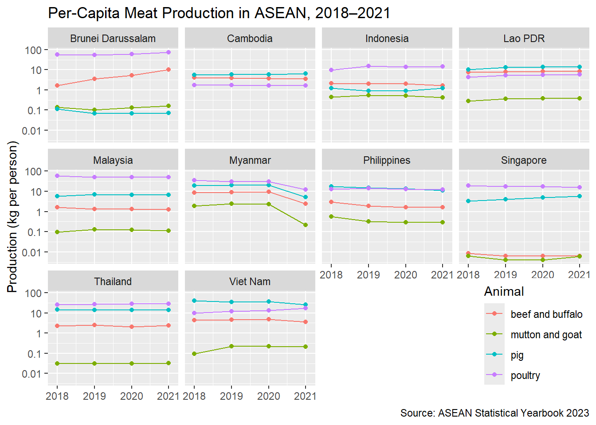

library(tidyverse)
library(readxl)
library(waldo)Week 03 Lab: Tidying ASEAN Meat-Production Data
3.1 Summary of Team Predictions (Sheet X.14)
As the Team Reporter, I have compiled the predictions from Jun Lum, Benjamin, Bryan, and Zen regarding the tidying of sheet X.14.
Part A & B: Columns, Classes, and Row Counts
The table below summarizes the team’s expectations for the final tidy dataset structure.
| Member | Expected Columns & Classes | Expected Rows | Reasoning / Formula |
|---|---|---|---|
| Jun Lum | Country (Char), Animal Type (Char), Year (Num), Production (Num) | 160 | \(10 \text{ countries} \times 4 \text{ years} \times 4 \text{ animal types}\) |
| Benjamin | Country (Char), Animal Type (Char), Year (Num), Production (Num) | 160 | \(10 \text{ countries} \times 4 \text{ years} \times 4 \text{ animal types}\) |
| Bryan | Country (Char), Animal Type (Char), Year (Num), Production (Num) | 160 | \(10 \text{ countries} \times 4 \text{ years} \times 4 \text{ animal types}\) |
| Zen | Country (Char), Animal Type (Char), Year (Num), Production (Num) | 160 | \(10 \text{ countries} \times 4 \text{ years} \times 4 \text{ animal types}\) |
Part C: Why is Sheet X.14 not tidy
The team identified several distinct violations of tidy data principles in the current layout:
- Structural Misplacement of Variables:
- Years: Jun Lum and Zen identified years acting as column headers, whereas ben and Bryan noted that years are serving as section labels/stacked within rows.
- Headers: Jun Lum noted individual country names are being used as column headers.
- Mixing Data Levels (Raw vs. Aggregated): Jun Lum, Benjamin, and Zen all noted that summary columns/rows (e.g., the ASEAN total column) are mixed directly into the raw data.
- Data Quality & Redundancy:
- Benjamin pointed out that “Poultry” rows contain no data and should be removed entirely.
- Bryan noted that missing values are represented inconsistently using symbols like
-.
Reporter summary (team)
- Agreed tidy variables:
country(character),animal(character),year(numeric),production(numeric). - Agreed row count: 160 rows (\(10 \times 4 \times 4\)).
- Agreed non-tidy issues: header-encoded years, layout-encoded variables, and mixing summary totals (ASEAN/Total) with raw observations.
- Discrepancies to resolve during cleaning: Ben expects poultry to have no data and be removable; others treat poultry as one of the four animal categories required by the task. Bryan notes missing values shown as
-in the source.
3.2 Import the ASEAN Meat Production Data
Open ASEAN-Statistical-Yearbook-2023.xlsx and identify the cell range containing the table in sheet X.14.
meat_raw <- read_xlsx(
path = "ASEAN-Statistical-Yearbook-2023.xlsx",
sheet = "X.14",
range = "A4:L36"
)
meat_raw# A tibble: 32 × 12
`Animal Type` `Brunei Darussalam` Cambodia Indonesia `Lao PDR` Malaysia
<chr> <dbl> <dbl> <dbl> <dbl> <dbl>
1 2021 NA NA NA NA NA
2 Livestock producti… NA NA NA NA NA
3 Beef and Buffalo M… 4.27 59.5 459. 61.3 40.8
4 Pig meat 0.0314 107. 324. 102. 219.
5 Mutton and Goat Me… 0.0709 0 118. 2.83 3.62
6 Poultry production 0 0 0 0 0
7 Poultry meat 31.6 27.8 3889. 43.2 1625.
8 Total meat product… 36.0 195. 4789. 209. 1889.
9 2020 0 0 0 0 0
10 Livestock producti… 0 0 0 0 0
# ℹ 22 more rows
# ℹ 6 more variables: Myanmar <dbl>, Philippines <dbl>, Singapore <dbl>,
# Thailand <dbl>, `Viet Nam` <dbl>, ASEAN <dbl>3.3 Tidy the Meat Production Data
meat_tidy <- meat_raw %>%
rename(label = 1) %>%
select(where(~ !all(is.na(.x)))) %>%
select(-any_of("ASEAN")) %>%
mutate(
label = str_squish(as.character(label)),
year = as.numeric(if_else(
str_detect(label, "^\\d{4}$"),
label,
NA_character_
))
) %>%
fill(year, .direction = "down") %>%
mutate(
label_lower = str_to_lower(label),
animal = case_when(
str_detect(label_lower, "beef") &
str_detect(label_lower, "buffalo") ~ "beef and buffalo",
str_detect(label_lower, "^pig") ~ "pig",
str_detect(label_lower, "mutton") |
str_detect(label_lower, "goat") ~ "mutton and goat",
str_detect(label_lower, "^poultry") &
!str_detect(label_lower, "production") ~ "poultry",
TRUE ~ NA_character_
)
) %>%
select(-label_lower) %>%
filter(!is.na(animal), year %in% 2018:2021) %>%
pivot_longer(
cols = -c(label, year, animal),
names_to = "country",
values_to = "production",
values_transform = list(production = as.character)
) %>%
mutate(
country = str_squish(country),
production = readr::parse_number(production, na = c("-", ""))
) %>%
arrange(desc(year), animal, country) %>%
select(country, animal, year, production)
meat_tidy %>% slice_head(n = 6)# A tibble: 6 × 4
country animal year production
<chr> <chr> <dbl> <dbl>
1 Brunei Darussalam beef and buffalo 2021 4.27
2 Cambodia beef and buffalo 2021 59.5
3 Indonesia beef and buffalo 2021 459.
4 Lao PDR beef and buffalo 2021 61.3
5 Malaysia beef and buffalo 2021 40.8
6 Myanmar beef and buffalo 2021 137. meat_tidy %>% slice_tail(n = 6)# A tibble: 6 × 4
country animal year production
<chr> <chr> <dbl> <dbl>
1 Malaysia poultry 2018 1873.
2 Myanmar poultry 2018 1896.
3 Philippines poultry 2018 1380.
4 Singapore poultry 2018 107.
5 Thailand poultry 2018 1780.
6 Viet Nam poultry 2018 947.# Verifier checks
nrow(meat_tidy)[1] 160meat_tidy %>% distinct(animal) %>% arrange(animal)# A tibble: 4 × 1
animal
<chr>
1 beef and buffalo
2 mutton and goat
3 pig
4 poultry 3.4 Correct Cambodia’s Mutton-and-Goat Entries
Justification (brief): we target exactly the four Cambodia + mutton-and-goat rows where the XLSX encodes missing “-” as numeric 0 for years 2018–2021, and replace only those values with NA.
meat_tidy <- meat_tidy %>%
mutate(
production = if_else(
country == "Cambodia" &
animal == "mutton and goat" &
year %in% 2018:2021 &
production == 0,
NA_real_,
production
)
)
meat_tidy %>%
filter(country == "Cambodia", animal == "mutton and goat") %>%
arrange(desc(year))# A tibble: 4 × 4
country animal year production
<chr> <chr> <dbl> <dbl>
1 Cambodia mutton and goat 2021 NA
2 Cambodia mutton and goat 2020 NA
3 Cambodia mutton and goat 2019 NA
4 Cambodia mutton and goat 2018 NA3.5 Checkpoint: Compare meat_tidy to Reference Data
meat_ref <- read_csv("meat_tidy_reference.csv", show_col_types = FALSE)
compare(meat_tidy, meat_ref, tolerance = 1e-6)✔ No differences3.6 Tidy the Population Data
Import sheet I.1 (population in thousands), excluding the ASEAN aggregate row.
pop_raw <- read_xlsx(
path = "ASEAN-Statistical-Yearbook-2023.xlsx",
sheet = "I.1",
skip = 4
)
pop_raw# A tibble: 14 × 11
Country `2013` `2014` `2015` `2016` `2017` `2018` `2019` `2020`
<chr> <dbl> <dbl> <dbl> <dbl> <dbl> <dbl> <dbl> <dbl>
1 Brunei Darus… 406. 412. 412. 417. 421. 442. 460. 454.
2 Cambodia 14677. 14932. 15192. 15454. 15718. 15982. 16079. 16338.
3 Indonesia 248818. 252165. 255588. 258496. 261356. 264162. 266912. 270204.
4 Lao PDR 6644. 6809. 6672. 6787. 6901. 7013. 7123. 7261.
5 Malaysia 30214. 30708. 31186. 31634. 32022. 32382. 32523 32447.
6 Myanmar 51184 51991 52450 52917 53388 53863 54340 54818.
7 Philippines 98196. 99880. 101562. 103243. 104921. 105755. 107288. 108667.
8 Singapore 5399. 5470. 5535. 5607. 5612. 5639. 5704. 5686.
9 Thailand 66755. 67003. 67236. 67455. 67653. 67832. 65557. 65421.
10 Viet Nam 90191. 91204. 92229. 93251. 94286. 95385. 96484. 97583.
11 ASEAN 612484. 620574. 628062. 635261. 642279. 648455. 652469. 658879.
12 <NA> NA NA NA NA NA NA NA NA
13 Source: NA NA NA NA NA NA NA NA
14 ASEAN Secret… NA NA NA NA NA NA NA NA
# ℹ 2 more variables: `2021` <dbl>, `2022` <dbl>pop_tidy <- pop_raw %>%
rename(country = 1) %>%
select(where(~ !all(is.na(.x)))) %>%
mutate(country = str_squish(as.character(country))) %>%
filter(!is.na(country), country != "", country != "ASEAN") %>%
filter(
!str_detect(country, "^Source"),
!str_detect(country, "ASEAN Secretariat")
) %>%
pivot_longer(
cols = -country,
names_to = "year",
values_to = "pop"
) %>%
mutate(
year = as.numeric(year),
pop = as.numeric(pop)
) %>%
filter(year %in% 2013:2022) %>%
arrange(desc(year), country) %>%
select(country, year, pop)
pop_tidy %>% slice_head(n = 6)# A tibble: 6 × 3
country year pop
<chr> <dbl> <dbl>
1 Brunei Darussalam 2022 445.
2 Cambodia 2022 16843.
3 Indonesia 2022 275720.
4 Lao PDR 2022 7443.
5 Malaysia 2022 32698.
6 Myanmar 2022 55770.# Verifier note: read_xlsx() trims whitespace by default (trim_ws = TRUE),
# so a trailing space in "Malaysia " is typically removed during import.3.7 Checkpoint: Compare pop_tidy to Reference Data
pop_ref <- read_csv("population_tidy_reference.csv", show_col_types = FALSE)
compare(pop_tidy, pop_ref, tolerance = 1e-6)✔ No differences3.8 Join Meat Production to Population
merged <- meat_tidy %>%
left_join(pop_tidy, by = c("country", "year")) %>%
select(country, animal, year, production, pop)
# Verifier: ensure row ordering matches meat_tidy
identical(
merged %>% select(country, animal, year),
meat_tidy %>% select(country, animal, year)
)[1] TRUE3.9 Derive Per-Capita Production
Production is in thousand metric tons; population is in thousand persons. Thus \((\text{production}/\text{pop})\) is metric tons per person; multiply by 1000 to get kg per person.
merged <- merged %>%
mutate(meat_per_cap = production / pop * 1000)
merged %>% slice_head(n = 6)# A tibble: 6 × 6
country animal year production pop meat_per_cap
<chr> <chr> <dbl> <dbl> <dbl> <dbl>
1 Brunei Darussalam beef and buffalo 2021 4.27 430. 9.92
2 Cambodia beef and buffalo 2021 59.5 16592. 3.59
3 Indonesia beef and buffalo 2021 459. 272248. 1.69
4 Lao PDR beef and buffalo 2021 61.3 7338. 8.35
5 Malaysia beef and buffalo 2021 40.8 32576. 1.25
6 Myanmar beef and buffalo 2021 137. 55295. 2.483.10 Checkpoint: Compare merged to Reference Data
merged_ref <- read_csv("merged_reference.csv", show_col_types = FALSE)
compare(merged, merged_ref, tolerance = 1e-6)✔ No differences3.11 Visualize the Result
ggplot(
merged,
aes(x = year, y = meat_per_cap, color = animal)
) +
geom_line() +
geom_point() +
labs(
x = NULL,
y = "Production (kg per person)",
color = "Animal",
title = "Per-Capita Meat Production in ASEAN, 2018–2021",
caption = "Source: ASEAN Statistical Yearbook 2023"
) +
xlim(2017.9, 2021.1) +
scale_y_log10(
breaks = c(0.01, 0.1, 1, 10, 100),
labels = c("0.01", "0.1", "1", "10", "100")
) +
facet_wrap(~country) +
theme(
legend.position = "inside",
legend.position.inside = c(1, 0),
legend.justification.inside = c(1, 0.05)
)
4.1 Reflect on AI Use
- Tool used: (fill in)
- One useful AI suggestion: (fill in)
- One AI response that was wrong/incompatible/etc. and how the team corrected it: (fill in)
4.2 Roles and Contributions
- Member A (Coder): …
- Member B (Navigator + Verifier): …
- Member C (Constructive Critic + Reporter): …
- Member D (AI Liaison): …
3.12 Comment on the Plot
(Write 1+ noteworthy feature and cite a credible source that helps interpret it.)